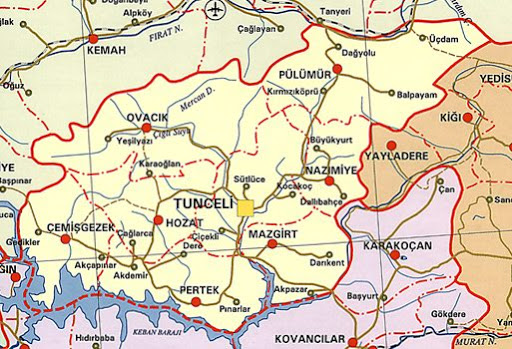

Doğa ve Coğrafya
Tümüyle Fırat Havzası içerisinde kalan İl, doğal sınırlarla kuşatılmış yüksek bir bölgedir. Doğu Toros Dağlarının uzantıları doğu-batı yönünde uzanarak ilin kuzeybatısını, kuzeyini ve kuzeydoğusunu hemen hemen bütünüyle kaplar. Bu dağlar aşılması güç sıralar oluşturduğu için Tunceli, Türkiye'nin doğu ucunda Iğdır Ovasından başlayıp Erzincan Ovasına kadar uzanan verimli çöküntü alanıyla bütünleşememiştir. Bu dağlar, yer yer hem yüzey sularıyla aşınarak hem de akarsular tarafından derince oyularak yüksek platolara dönüşmüştür. Vadiler çok dar ve dik olup vadi tabanlarında ovalar oluşmamıştır.
Güneyden kuzeye ve batıdan doğuya yükselen il topraklarının % 70'ini dağlar, % 25'ini platolar, % 5'ini ovalar ve düzlükler oluşturmaktadır.
DAĞLAR
Tunceli il sınırları içerisinde bulunan dağlar Doğu Torosların uzantısı olarak batı-doğu yönünde uzanmaktadır. Munzur Dağları ve uzantısı olan Avcı Dağları, il topraklarının kuzeybatı ve kuzey kesiminde doğal sınır oluşturmakta, kuzeydoğusunda ise Bağırpaşa Dağı yer almaktadır. İlin en yüksek noktası, Munzur Dağlarının doğusunda 3463 metre yükseklikteki Akbaba Tepesidir.
İlin orta ve güney kesimlerinde 1500-2000 metre yükseklikte dizilen tepeler vardır. Mazgirt'in doğusundaki Kırklar Dağı (2033 m.), Hozat'ın güneydoğusundaki Topatan Tepe (2234 m.) , Merkez-Ovacık arasında bulunan Karaoğlan Dağı (2422 m.) ilin başlıca yüksek tepeleridir. Birbirlerinden derin ve dar vadilerle ayrılan ve tek tek yükselen bu dağlar, sık sayılabilecek meşe ormanlarıyla kaplıdır. Eteklerde ise ardıç topluluklarına rastlanır.
Munzur Dağları
Munzur Dağları, ilin kuzeybatısı, kuzeyi ve kuzeydoğusunda çok zor geçit veren sıralar halinde 130 km. boyunca uzanmaktadır. 25-30 km. arasında değişen çok geniş bir taban üzerine oturan Munzur Dağlarının doruklarında yükselti genellikle 3000 metrenin üzerindedir. Munzur Dağlarının Tunceli sınırları içerisinde kalan bölümünde en önemli dorukları batıdan doğuya Biçare Dağı (3111 m.), Ziyaret Tepe (3071 m.) ve Akbaba Tepesidir. (3463 m.)
Munzur Dağları, dik bir biçimde Ovacık çöküntü alanına inmektedir. Bu kesim Mercan Dağları olarak bilinmektedir. 1400 metre yükseltili Ovacık'tan sonra, 2800-3000 metreye çıkan yükselti kuşağında çok dik yamaçlar bulunmakta ve bu yamaçlardan kuzeye doğru açılan havza tabanlarına inilmektedir. Havza tabanlarıyla havzaları birbirinden ayıran yüksek sırtlar, yaz aylarında yöre halkının yaylak alanlarını oluşturmaktadır.
Güney yamaçlarında yer yer rastlanan meşe ve ardıç toplulukları dışında hemen tümüyle çıplak olan Munzur Dağlarının 2700 metreden yüksek kesimleri sürekli karlarla kaplıdır ve kış aylarında yüksek ve sarp geçitler kapanmaktadır. Bu geçitlerin en önemlileri yükseltileri 3000 metreye yaklaşan Mercan ve Kemah geçitleridir.
Bağırpaşa Dağı
Bağırpaşa Dağı, Munzur Dağlarını Karasu-Aras Dağlarına bağlayan geniş ve yüksek bir kütledir. İl alanının kuzeydoğu ucunu tamamıyla kaplayan Bağırpaşa Dağı, batıdan Pülümür Çayı Vadisi, kuzeyden Karasu Vadisi, güneyden Peri Suyu Vadisi ile çevrilmiştir. Zirveleri sürekli kar ve buzlarla kaplı olan Bağırpaşa Dağının en yüksek noktası 2906 metredir. Özellikle güney etekleri, meşe ve ardıç ağaçlarından oluşan sık bir örtüyle kaplıdır. Pülümür, Karasu ve Peri Suyu vadilerine doğru alçalan kesimler, zengin otlaklarla kaplı platolar durumundadır.
PLATOLAR
İl topraklarının % 25'ini kaplayan platolar, Munzur Dağlarının ve Bağırpaşa Dağının doruklar bölgesinde, yüksek sırtlarla çevrilmiş düzlükler şeklindedir. Ayrıca güneydoğu ve doğuda Pülümür Çayı Vadisine inen kesimde, çeşitli yükseklik basamaklarına sıralanmış platolar vardır. Bu platoların en ünlüleri, Mercan Dağları üzerindeki Merk Yaylası ve Munzur Dağlarının orta bölümünde yer alan Kepir Yaylası'dır. Kışları çok soğuk geçen bu platolar yazın otlak alanları olarak kullanılır.
İlin orta ve güney kesimlerindeki dağlarda kalkerli kayaçların aşınmasıyla oluşan platolar, ot ve su kaynakları açısından kuzeydeki platolara göre daha zayıftır. Ancak ulaşım kolaylığı ve otlatma süresinin uzunluğu nedeniyle hayvancılık açısından önem taşımaktadır.
VADİLER
Tunceli'de vadiler yüksek ve sarp kesimlerde hem il içinde hem de çevre illerle bağlantıyı sağlayan doğal ulaşım yollarını oluşturmaktadır. Çoğunlukla güney doğrultusunda uzanan vadiler, henüz gelişmelerini tamamlamamış, dar ve dik yarıklar halindedir. Tektonik çöküntü alanlarında oluşan akarsu vadileri biraz daha geniştir. İlin en önemli vadileri Munzur, Mercan, Pülümür, Peri ve Tahar Çayı Vadisidir. Bu vadilerin özellikle güneyinde yer yer genişleyen kesimlerinde tarım yapılabilmektedir.
Munzur Vadisi
Munzur Vadisi, Munzur Dağlarının orta bölümünde yer alan tepelerin güney yamaçlarından pek çok kol halinde başlar. Bu kollar, ilin en büyük düzlüğü olan Ovacık çöküntü alanında birleşir. Munzur Vadisi, merkez ilçede Pülümür Vadisiyle birleşerek güneye uzanır ve orada Keban Baraj Gölüne ulaşır.
Pülümür Vadisi
Pülümür Vadisi, Avcı Dağlarının doğu yamaçlarından birkaç kol halinde başlayıp güneye uzanan çok dar ve dik bir vadidir. Merkez ilçede Munzur Vadisi ile birleşip güneyde Keban Baraj Gölüne açılmaktadır.
Peri Vadisi
Peri Vadisi, Bingöl Dağlarının batı yamaçlarında çok sayıda kol halinde başlar. Elazığ-Tunceli sınırını oluşturarak güneye Keban Baraj Gölüne açılan vadi yer yer dar ve diktir. Peri Vadisi, Tunceli-Bingöl arasındaki ilişkiyi sınırlandıran doğal bir engel oluşturmaktadır.
Tahar Vadisi
Tahar Vadisi, Kırklar Dağının batı yamaçlarından batıya ve güneye yönelerek Keban Baraj Gölüne açılmaktadır. Diğer vadiler kadar dar ve dik değildir. Çemişgezek yöresinde yer yer genişlediği kesimlerde, akarsu yatağının iki yanında sıra sıra bükler oluşmuştur.
OVALAR
Tunceli'de ovalar il topraklarının % 5'ini kaplamaktadır. İlde önemli sayılabilecek ova ve düzlükler bulunmamaktadır. Tunceli'nin kuzey yarısındaki düzlükleri, Munzur Dağlarının güneyindeki çukurlukta oluşmuş Zeranik Ovası ile Ovacık ilçesinin Yeşilyazı Bucağında bulunan Yeşilyazı Ovasıdır. Munzur Dağlarından ovaya inen çok sayıda akarsu ve yüzey sularının taşıdıkları maddeler, çöküntü alanının tabanında kalın bir alüvyal toprak tabakası oluşturmuştur. 74 Km2 büyüklüğünde ve 1350 metre yükseltili Ovacık Ovasında toprak bitkisel üretime elverişli olmakla birlikte, iklim çok sert olduğu için tarımsal etkinlikler sınırlıdır. Ovacık İlçesi Yeşilyazı Bucağındaki Yeşilyazı Ovası ise 44 Km2 büyüklüğündedir. Buralarda hububat ve bakliyat ekimi yapılmakta ve bu alanların bir kısmı sulanabilmektedir.
AKARSULAR
Tunceli, akarsu yönünden çok zengindir. Düzenli yağış alan yüksek dağlarda yer altına sızan kar ve yağmur suları, daha düşük yükseltilerde kaynaklar şeklinde yeniden yüzeye çıkar. Akarsuları besleyen bu kaynaklar sürekli olduğundan, akarsuların taşıdığı sular bol ve akışları da oldukça düzenlidir. İlin önemli akarsuları, Munzur Suyu, Mercan Deresi, Pülümür Çayı, Peri Suyu ve Tahar Çayıdır.
GÖLLER
Tunceli'de Keban Baraj Gölünün dışında önemli ve büyük göl yoktur. Munzur Dağları ile bu sıranın alt birikimlerini oluşturan Mercan, Avcı, Karasakal Dağları üzerinde ve Bağırpaşa Dağının doruklar bölgesinde buzul yataklarının zamanla suyla dolması sonucunda oluşmuş küçük krater gölleri vardır. Bunlardan bazıları Karagöl, Koçgölü, Mercan Gölleri, Katır Gölleri, Dilincik Gölü, Çimli Gölü, Şer Gölü ve Buyer Baba Gölleridir. Krater gölleri içerisinde en büyüğü, Ovacık-Koyungölü Köyünün kuzeyinde, 2400 metre yükseklikte yer alan Karagöl'dür. Koyungölü Köyü sakinlerinin geçmişte yayla alanı olarak kullandığı göl çevresinde bitki örtüsü ve doğal peyzaj etkileyicidir. Genelde 2000-3000 metre yükseklikteki zirvelerde yer alan bu göllere bugünkü durumda herhangi bir ulaşım olanağı yoktur.
BİTKİ ÖRTÜSÜ
Tunceli ilinde çok farklı veriler sunan fiziki coğrafya özelliklerine, iklim farklılıklarına ve çok zengin olan su kaynaklarına bağlı olarak ortaya çıkan bio-çeşitlilik, il topraklarında özellikle bahar aylarında bitki örtüsü ve doğal peyzaj bakımından da zengin görüntülerin ortaya çıkmasını sağlamıştır. Doğu Anadolu Orman Kuşağı içinde kalan il topraklarının % 27'sini kaplayan ve genelde bodur ve baltalık meşe ağaçlarından oluşan ormanlar, ilin orta ve kuzey kesimlerinde, Tunceli Merkez, Ovacık, Pülümür, Hozat ve Nazımiye ilçelerinde yoğunlaşmaktadır. İlin kuzeyinde batıdan doğuya sıralar halinde uzanan dağların 1800-2000 metreden daha yüksekteki sarp ve dik yamaçları, doğal koşullar ve iklim nedeniyle ağaç yetişmediği için genel olarak çıplaktır. Bu dağların güney yamaçlarında, 1800 metreden daha alçak kesimlerde yer yer meşe ve ardıç topluluklarına rastlanmaktadır. Dağların güneye doğru alçalan orta ve güney kesimlerinde, tek tek yükselen dağlarla, bu dağları birbirinden ayıran sırtlar genelde meşe ormanlarıyla kaplıdır. Vadilerde ve akarsu boylarında meşe ağaçlarının yanı sıra ardıç, gürgen, dişbudak, akağaç, söğüt, kavak ve çınar ağaçları da bulunmakta, platolarda ise doğal bitki örtüsünü kısa boylu çayır otları oluşturmaktadır. Munzur Vadisi tabanında ve su boylarında karışık olarak karaağaç, akağaç, kızılağaç, dişbudak, çınar, asma, huş, ceviz, yabani fındık, kavak, söğüt ve çalı türlerinden oluşan zengin bir bitki örtüsü bulunmaktadır. Alt flora, meşelerin koru niteliğinde olduğu yerlerde zengin durumdadır.
Bitki örtüsü bakımından çok zengin olan Munzur Vadisi Milli Parkı florasında 1518 çeşitli bitki kayıtlı olup, bunlardan 43 çeşidi Munzur Dağlarına, 227 çeşidi Türkiye'ye endemik türlerden oluşmaktadır. Munzur Dağlarından başka hiçbir yerde bulunmayan endemik bitkiler arasında; Çan Çiçeği, Erzincan Kirazı, Bindebir Keklik Otu, Munzur Kekiği, Munzur Düğün Çiçeği, Dağçayı, Munzur Dağı Oltuotu ve Menekşe sayılabilir.
Çemişgezek ve Pertek ilçelerinde orman varlığı gün geçtikçe azalmakla birlikte Keban Baraj Gölüne bakan kesimlerde bodur meşeliklere rastlanmaktadır. Güney ilçelerinde orman varlığının zayıflamasına karşın meyve bahçelerinin yaygın olması, bitki örtüsünü zenginleştirmektedir.
İlin özellikle orta ve kuzey kesimlerinde düzlüklerde ve akarsu kenarlarında ilkbahar aylarında canlanan çeşitli kır çiçekleri, rengârenk örtüler oluşturarak çok güzel görüntüler oluşturmakta ve ilin bitki çeşitliliğine çok önemli katkı yapmaktadır.
YABANİ HAYVAN VARLIĞI
Tunceli ili, yaban hayvan hayatı bakımından da oldukça zengindir. Özellikle Munzur Vadisi ve çevresi yaban hayvanları için elverişli bir ortam sunmaktadır. Çengel Boynuzlu Yaban Keçisi ve Bezuvar isimli iki tür dağ keçisi ile av kuşlarından Ur Kekliği bu yöreye özgü ilginç ve nadir türlerdir. Çengel boynuzlu yaban keçisi, yazın orman sınırının üzerindeki kayalık yerlerde, kışın ormanın içindeki sarp yerlerde yaşamaktadır. İlde sansar, kokarca, porsuk, tavşan, dağ keçisi, dağ koyunu, tilki, boz ayı, domuz, kurt, sincap ve kirpi yaban hayatının yaygın türlerini oluşturmaktadır. Mağaralarda ve kaya kovuklarında yaşayan boz ayı Munzur yaban hayatının önemli büyük memelilerinden biridir. Bölgenin diğer büyük memelileri, orman içerisindeki kayalıklarda yaşayan vaşak, yaban domuzu ve bozkurt'tur. İlde yırtıcı kuşlardan kartal, akbaba, doğan, şahin, atmaca, kerkenez, tellice ve çaylaklara hemen her yerde rastlanmaktadır. Gece yırtıcılarından puhu kuşu, baykuş ve yarasa da yaygın türlerdendir. Yörede yaşayan diğer kuş türleri arasında keklik, çil keklik, toy, mezgeldek, turna, bıldırcın, çulluk, üveyik, tahtalı ve kaya güvercinleri, bazı ördek türleri ve ender olarak da kaz bulunmaktadır.
Munzur Suyu, kırmızı benekli alabalık türlerinin yetişmesine çok elverişli olup, özellikle yukarı çığırında bol alabalık yaşamaktadır. Munzur Suyunda alabalık, kepenez ve dargın balığı, suyun ısındığı aşağı kısımlarda yayın balığı, diğer akarsularda ise alabalık, kepenez balığı ve çay balığı bulunmaktadır. Keban Baraj Gölünde ise sazan, küpeli balık ve turna balığı türleri bulunmaktadır.
Ovacık'ın doğusunda Munzur Gözelerinin 1-2 Km. güneyinden başlayarak, başta Munzur Suyu ve Mercan Deresi olmak üzere Tunceli'ye kadar 80 Km.lik alana yayılmış bulunan kırmızı benekli alabalık önemli bir değere sahiptir.